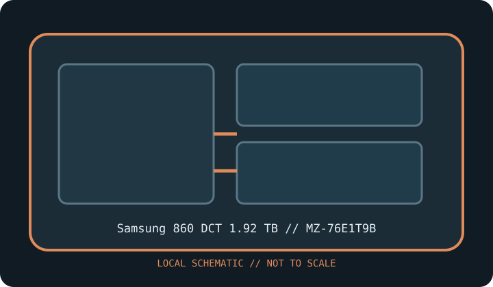

[ INDIVIDUAL COMPONENT // SATA SOLID-STATE DRIVE ]
Samsung 860 DCT 1.92 TB
Model-specific catalog record for full manufacturer SKU MZ-76E1T9B. Values are included only where matched to the manufacturer documentation.

IDENTIFICATION: Match complete SKU MZ-76E1T9B, capacity and revision to the label and manufacturer document. OEM and regional variants may differ.
Specifications
| Manufacturer / model | Samsung 860 DCT 1.92 TB |
|---|---|
| Full SKU | MZ-76E1T9B |
| Capacity | 1.92 TB |
| Form factor | 2.5-inch |
| Interface / protocol | SATA SSD; not NVMe. M.2 and mSATA are distinct mechanical standards and require host support for SATA signaling. |
| NAND / controller / endurance / performance | Not asserted unless confirmed for this exact SKU, capacity and revision in the linked manufacturer datasheet. Family-level assumptions are intentionally omitted. |
| Host, firmware & TRIM caveats | Firmware tools and OEM qualification are model-specific. TRIM/SMART requires OS, driver and ATA pass-through support; some USB bridges and RAID modes do not pass these commands. |
Archival, health & service notes
- Record label, serial, firmware, SMART/health snapshot, host/controller, date and source revision; photograph condition before cleaning or opening.
- For legacy and enterprise drives, firmware updates, sanitize, encryption, diagnostics and SMART interpretation may be unavailable or host-specific. Do not cross-flash by family-name similarity.
- TRIM, garbage collection and speed vary with OS/driver, workload, free space, firmware and link negotiation. Peak rates/TBW do not guarantee lifespan or powered-off retention.
- Keep verified backups and periodic integrity checks; SSD health is not an archival copy.
Manufacturer datasheet / specification
- Samsung official product support and specification archive — MZ-76E1T9BManufacturer document or specification page selected for this SKU/family. Check the matching capacity table and revision against the physical label before relying on rated values.